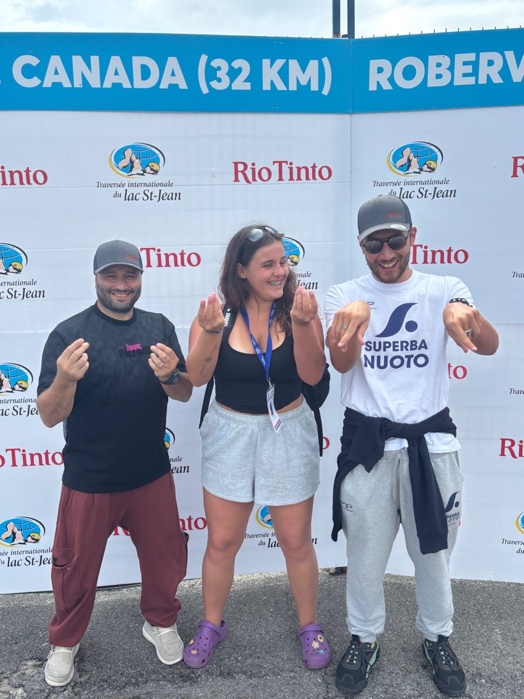
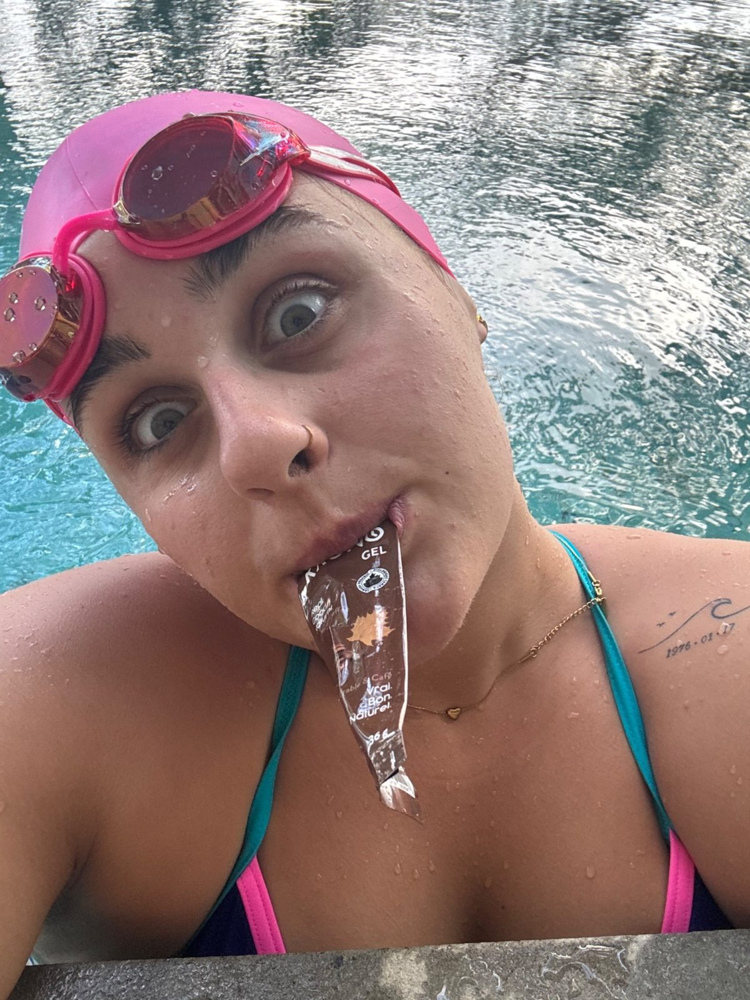
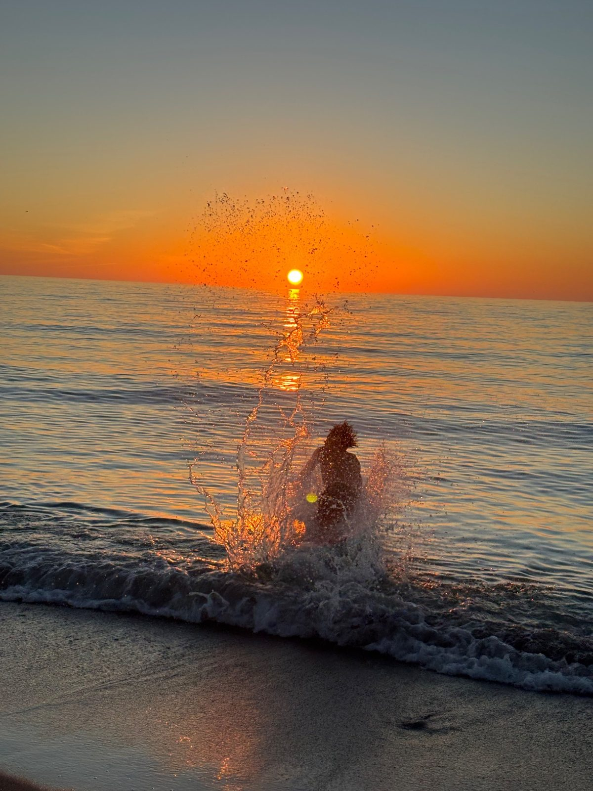
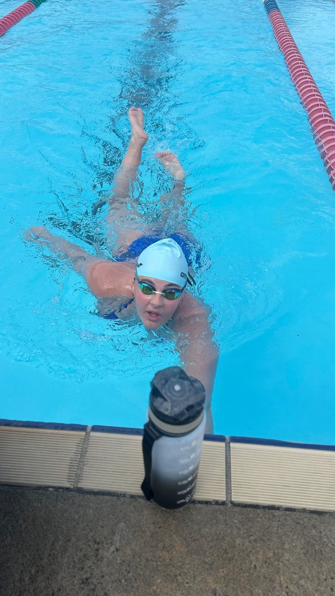
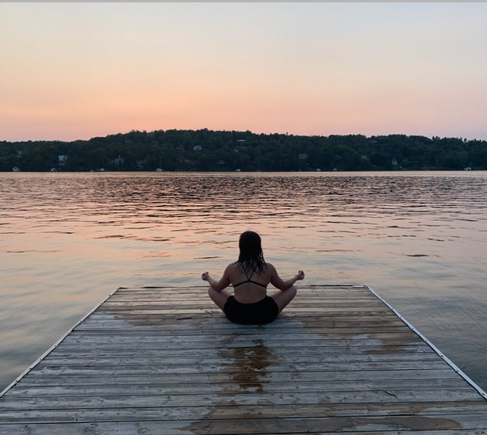
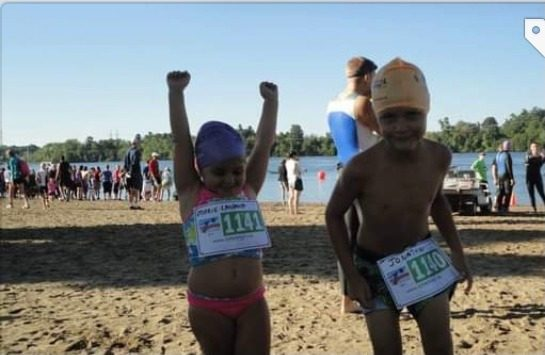
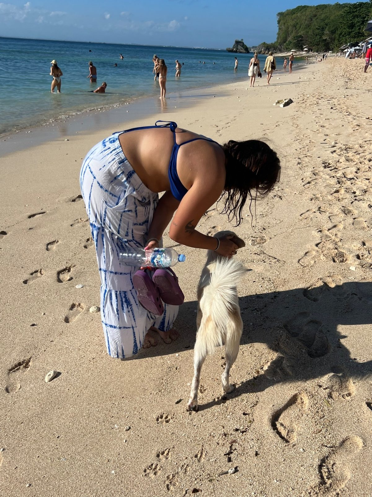
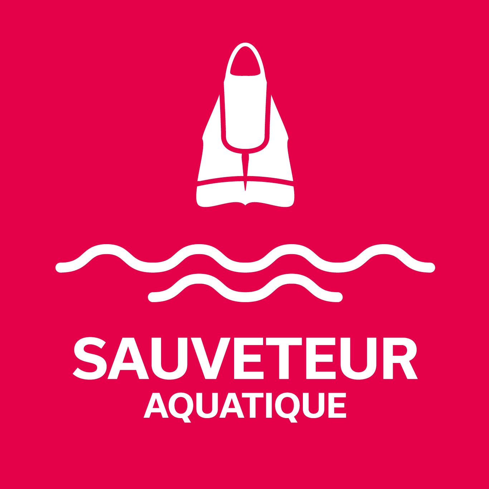
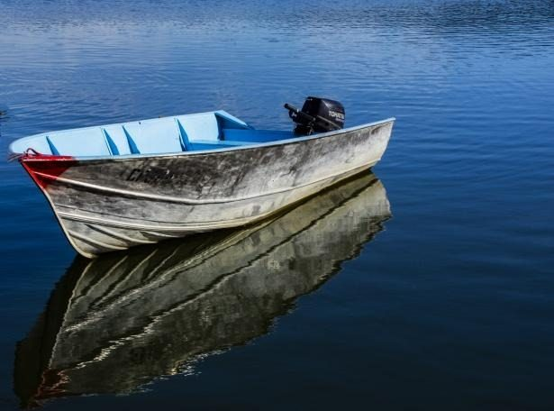
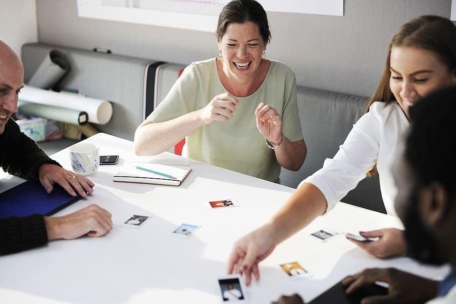

24 heures de nage en eau libre, en solo, pour briser les tabous entourant la santé mentale et amasser des fonds pour la recherche — un coup de bras à la fois.
de nage continue en eau libre, sans jamais toucher le bateau ni recevoir d'aide
près de 20 % de la population du Québec sera affectée par un trouble mental au cours de sa vie
selon l'INSPQ, moins de la moitié des personnes affectées consultent un professionnel
Mon défi consiste à réaliser une nage d'endurance de 24 heures en eau libre, en solo — sans toucher le bateau ni qui que ce soit — afin de sensibiliser la population aux maladies mentales et d'amasser des fonds pour la recherche et le soutien en santé mentale.
À travers cette épreuve, je souhaite démontrer que même face aux plus grands défis, il est possible de continuer d'avancer, un coup de bras à la fois. La nage représente pour moi un symbole de persévérance, de résilience et d'espoir.
Ce projet a pour objectif de rassembler une communauté autour d'une cause importante, de briser les tabous entourant la santé mentale et de rappeler l'importance de mieux comprendre, prévenir et soutenir les personnes touchées par les maladies mentales.
Pendant 24 heures, je nagerai pour toutes les personnes qui vivent des moments difficiles, pour leurs proches et pour contribuer à faire avancer la recherche.



Cliquez sur une photo pour l'agrandir.
Glissez le curseur pour traverser les 24 heures de nage — du premier plongeon au dernier coup de bras.
« Le premier plongeon. Le cœur bat fort, la communauté est là, et la vague d'espoir se met en marche. »
← Faites glisser pour avancer dans la nuit et revoir le soleil se lever →
Qui est Marie-Laurence, et pourquoi la santé mentale est-elle une cause qui me tient à cœur ?

Je suis une fille qui a dû apprendre très jeune à se battre contre des choses que les autres ne voyaient pas.
À 14 ans, j'ai été diagnostiquée avec une dépression. À un âge où je devais simplement grandir et profiter de la vie, je me suis retrouvée à essayer de comprendre des émotions beaucoup trop lourdes pour moi.
J'ai connu l'anxiété, le stress, les doutes et ces moments où les pensées prennent toute la place. Des moments où avancer était difficile, où je me demandais si j'allais réussir à retrouver la lumière. De l'extérieur, certaines personnes pouvaient voir une fille qui continuait son chemin, mais à l'intérieur, je vivais des combats que peu de gens connaissaient.

C'est pour ça que la cause de la santé mentale est si importante pour moi. Parce qu'elle fait partie de mon histoire.
Je sais ce que ça fait de vivre des difficultés invisibles. Je sais à quel point c'est important de se sentir compris, écouté et de savoir qu'on n'est pas seul. Je veux contribuer à enlever les tabous autour des maladies mentales et rappeler aux personnes qui souffrent qu'elles ont le droit de demander de l'aide et qu'il y a toujours de l'espoir.
Ma dépression et mon anxiété font partie de mon parcours, mais elles ne définissent pas qui je suis.

Je suis aussi la fille qui a trouvé une force dans l'eau.
La fille qui a appris à transformer ses peurs en énergie et ses doutes en motivation. La fille qui a nagé des heures, qui a affronté le froid, la fatigue et ses propres limites pour réaliser des rêves que plusieurs auraient trouvés impossibles.
Chaque kilomètre que je nage représente plus qu'un défi sportif. C'est un message. Un message pour toutes les personnes qui traversent des tempêtes en silence. Un message pour leur dire qu'elles ne sont pas seules et que leurs difficultés ne leur enlèvent pas leur valeur.

Si je veux relever une nage de 24 heures, ce n'est pas seulement pour accomplir quelque chose d'extraordinaire.
C'est pour transformer mon histoire en quelque chose de positif. C'est pour utiliser ma voix afin d'aider d'autres personnes.
Aujourd'hui, quand je regarde la petite Marie-Laurence de 14 ans, je ne vois pas une fille faible. Je vois une fille courageuse qui continuait d'avancer même quand elle ne savait pas encore où son chemin allait la mener. Je suis une personne sensible, passionnée et déterminée. Je ressens profondément, je rêve grand et je veux faire une différence.
Je ne suis pas définie par mon diagnostic. Je suis définie par toutes les fois où j'ai choisi de continuer malgré mes peurs. Je suis Marie-Laurence. J'ai traversé mes tempêtes. Et mon histoire ne fait que commencer !
— Marie-LaurenceUne maladie mentale, ou trouble mental, se caractérise par une altération importante de la cognition, de la régulation émotionnelle et/ou du comportement, souvent accompagnée de détresse ou de difficultés fonctionnelles dans la vie quotidienne.
Près de 20 % de la population du Québec, soit une personne sur cinq, sera affectée par un trouble mental au cours de sa vie. Selon l'Institut national de santé publique du Québec, moins de la moitié des personnes affectées consultent un professionnel.
Sources : Québec.ca — chaque carte ouvre la fiche officielle du gouvernement du Québec.
Demander de l'aide est un geste de courage. Ces ressources sont là pour toi, ou pour un proche, en toute confidentialité.
(1 866 277-4553) — disponible en tout temps pour parler avec un professionnel.
Un service de consultation téléphonique gratuit et confidentiel pour des problèmes psychosociaux.
Ligne de référence disponible pour les proches d'une personne vivant avec un problème de santé mentale.
Une confédération d'organismes d'aide aux proches vivant avec un problème de santé mentale.
En cas d'urgence immédiate, composez le 911.
Aidez à sensibiliser les personnes en témoignant de votre histoire et des enjeux que vous avez vécus. Votre expérience peut contribuer à mieux faire comprendre cette réalité, à susciter l'empathie et à encourager des changements positifs.
Une nage de 24 heures, c'est le travail de toute une communauté. Joignez l'équipe qui veille sur la vague, de jour comme de nuit.

Assurez la sécurité dans l'eau et veillez sur la nageuse tout au long du défi.
Soutien médical et surveillance de l'état de la nageuse, heure après heure.

Pilotez ou assistez l'embarcation qui escorte la nage en eau libre.

Accueil, ravitaillement, animation : chaque coup de main fait avancer la vague.
Témoignage, bénévolat, partenariat ou simple mot d'encouragement — écrivez-nous, chaque message compte.